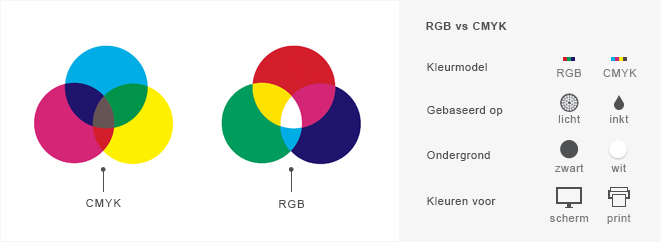

Hier komt mijn uitleg over Kleurmodellen
Er zijn twee soorten kleurmodellen; RGB (rood, blauw en geel) en CMYK (cyaan, magenta, yellow en key).
Bij RGB is de basis zwart en bij dat zwart wordt licht toegevoegd om de kleuren te maken.
Dit is ook waarom RGB vaak wordt gebruikt voor beeldschermen, omdat een beeldscherm die uitstaat zwart is.
